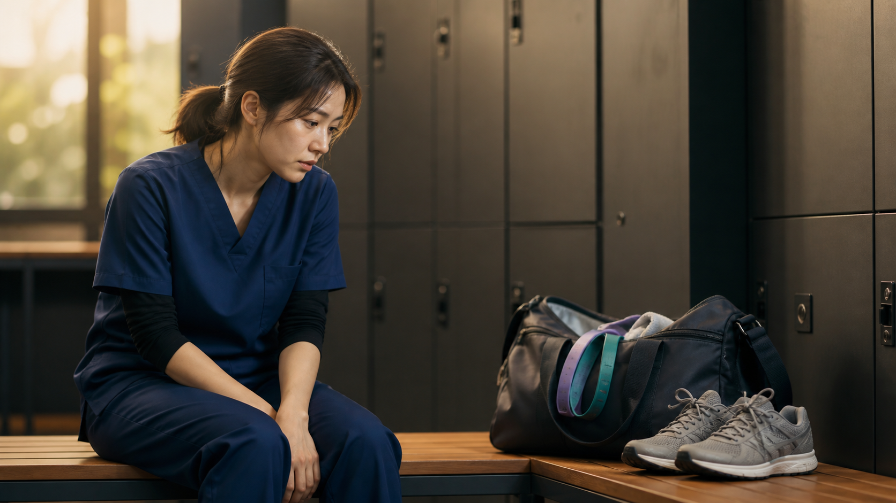
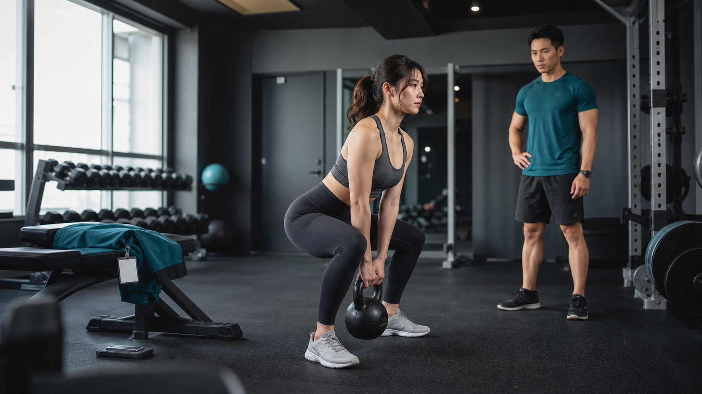

病棟で働く看護師は、勤務中に1万歩以上歩くことがあります。エレベーターを待たずに階段を使い、ナースコールや急変時には足早に駆けつけ、移乗や体位変換では全身を使います。
これだけ動いていれば、「仕事そのものが運動」「休日まで運動しなくても十分」と思うのも自然です。しかし、仕事で身体を消耗することと、身体を計画的に鍛えることは同じではありません。
勤務中の歩行や階段昇降も、健康に意味のある身体活動です。それでも、歩数が多いだけでは筋力や全身持久力が高まっているかまでは判断できません。看護師として長く働くには、仕事をこなす体力だけでなく、仕事の負荷を受け止められる余力をつくる必要があります。
「仕事で動いているから運動は不要」ではありません。勤務中の活動を土台に、筋力を高める筋トレと、全身持久力を高めるランニングやHIITを体調に合わせて加えることが大切です。疲れた身体をさらに追い込むのではなく、仕事に負けない身体を計画的につくりましょう。
看護師は仕事でどれくらい身体を動かしているのか
看護師の活動量は、病棟の構造、診療科、受け持ち人数、勤務時間、役割によって大きく変わります。周術期ICUの看護師を13週間測定した海外研究では、8時間勤務中の平均は5,938歩、約4.4kmでした。病棟や救急では1万歩を超える日もあれば、記録や処置が重なって意外に歩かない日もあります。
1万歩で何kcal消費する？
歩数だけから正確な消費カロリーは計算できません。ここでは、1歩を約70cm、1万歩を約7km、平地を時速4.8kmで約87.5分歩く条件で試算します。活動強度は「2024 Adult Compendium of Physical Activities」の平地歩行3.8METsを使います。
| 体重 | 1万歩の総消費カロリー（概算） |
|---|---|
| 50kg | 約291kcal |
| 60kg | 約349kcal |
| 70kg | 約407kcal |
計算式：METs × 3.5 × 体重（kg）÷ 200 × 時間（分）。安静時にも使うエネルギーを含む総消費量です。歩幅、速度、年齢、筋肉量、停止時間などで実際の値は変わります。
体重60kgなら約350kcalです。ただし、病棟での1万歩は、廊下を連続して速歩した1万歩とは違います。短い移動と停止を繰り返すため、同じ歩数でも心拍数が上がる時間や運動強度は異なります。
階段を1フロア往復すると何kcal？
1フロアを約20段とし、20段上って20段下りるまでに30〜60秒かかるとします。階段の上り下りを7.5METs、体重60kgとして計算すると、総消費量は約4〜8kcalです。
1回では小さく見えても、勤務中に何度も繰り返せば身体活動量は積み上がります。一方、必要なときに短く上り下りすることと、心肺機能を高める目的で一定時間トレーニングすることは分けて考える必要があります。
「身体活動」と「運動」は同じではない
厚生労働省は、身体活動を「安静にしている状態よりも多くのエネルギーを消費する、骨格筋の収縮を伴う全ての活動」とし、その中を生活活動と運動に分けています。
- 生活活動：家事、通勤、仕事、荷物運搬、階段昇降など
- 運動：体力の維持・向上を目的として、計画的・意図的・継続的に行う活動
つまり、病棟内を歩き回ることは立派な身体活動です。ゼロとして扱う必要はありません。しかし、仕事では運動時間、速さ、姿勢、負荷、休憩を自分の目的に合わせて設計できません。
歩数だけでは、何が鍛えられたか分からない
体力は一つの能力ではありません。全身持久力、筋力、筋持久力、柔軟性、敏捷性など複数の要素があります。1万歩を歩いても、上半身や体幹に十分な抵抗をかけたとは限りません。階段を使っても、短時間で終われば全身持久力を高める刺激として不足することがあります。
厚生労働省の「身体活動・運動ガイド2023」は、成人に1日約8,000歩に相当する身体活動だけでなく、3METs以上の運動を週4METs・時以上、筋トレを週2〜3日行うよう勧めています。日常で動くことと、計画的に鍛えることの両方が必要だと分かります。
勤務で疲れても、筋力や体力が向上するとは限らない
「たくさん動いた」「疲れた」「鍛えられた」は別の話です。看護業務では、長時間の立位、同じ動作、不自然な姿勢、突発的な力仕事が重なります。これらは大きな疲労を生みますが、狙った能力を向上させるトレーニングとは限りません。

同じ仕事に慣れると、それ以上の向上は起こりにくい
筋力を向上させるには、現在の能力を少し上回る刺激を与え、身体の適応に合わせて負荷を調整する「漸進性過負荷」が重要です。患者さんの移乗は筋肉を使いますが、重さや回数を安全に設定できず、左右差や腰への負担も生じます。仕事に慣れれば、その仕事をこなす能力は維持できても、全身の筋力が伸び続けるわけではありません。
急変時に走ることは、ランニング習慣ではない
急変時に短く走れば心拍数は上がります。しかし、いつ起こるか分からない数十秒の疾走を、一定時間・一定頻度で行う有酸素トレーニングの代わりにはできません。むしろ基礎体力が不足していると、急な走行や処置で息が上がり、余裕を失いやすくなります。
強い疲れがある日に運動を追加すればよいわけではありません。トレーニング効果には、適切な刺激だけでなく、睡眠、栄養、休息が必要です。
看護師に運動習慣が必要な理由
仕事の負荷に対する「余力」をつくる
同じ移乗介助や階段昇降でも、筋力と全身持久力が高い人ほど、自分の最大能力に対する相対的な負担は小さくなります。ぎりぎりの体力で勤務を終えるのではなく、勤務後にも回復できる余力をつくることが大切です。
集中力と判断力を支える
運動直後にすべての判断が良くなるわけではありません。それでも、定期的な身体活動は睡眠、気分、心血管・代謝の健康を支えます。看護師の集中力や判断力を守るには、知識だけでなく、十分に眠り、疲労から回復できる身体が土台になります。
ストレス対処の選択肢を増やす
つらい勤務の後に食べ過ぎたり、飲酒や喫煙へ頼りたくなったりすることは、意志の弱さだけで説明できません。運動はストレスをゼロにしませんが、仕事から気持ちを切り替える別の選択肢になります。問題が深刻な場合は運動だけで抱えず、産業保健スタッフや医療機関へ相談してください。
睡眠と体重管理を支える
運動習慣は睡眠やエネルギー消費を整える助けになります。ただし、夜勤による概日リズムの乱れや体重増加を運動だけで解決することはできません。食事、睡眠、勤務の組み方と合わせて考えましょう。
仕事中の身体活動だけでは足りない理由
余暇の運動は健康に良い一方、仕事中の身体活動は同じ効果を示さない場合があるという「身体活動のパラドックス」が研究されています。
- 低〜中強度の活動が長時間続く
- 動作や姿勢が偏りやすい
- 負荷や休憩を自分で調整できない
- 夜勤や連続勤務で回復が不足しやすい
- 全身持久力が低い人には、同じ仕事が相対的に高負荷になる
ただし、研究結果には職種や社会経済的要因などの影響もあり、「仕事で動くほど不健康」と単純化することはできません。大切なのは、仕事中の活動を健康づくりのすべてと考えず、勤務外で自分に必要な刺激と回復を設計することです。
歩くだけで終わらせない｜看護師に取り入れてほしい運動
ウォーキングやストレッチは、運動習慣の入口や回復日のコンディショニングとして大切です。そのうえでSmart Nurse Labでは、体調と経験に合わせ、もう一段負荷のかかる運動へ進むことを勧めます。
全身の筋力トレーニング
厚生労働省は成人に週2〜3日の筋トレを推奨しています。下半身だけでなく、背中、胸、肩、体幹までバランスよく鍛えましょう。
- スクワット、ランジ：立つ、しゃがむ、踏ん張る力
- ヒップヒンジ、デッドリフト系：臀部と背面を使う動作
- プッシュアップ：胸、肩、腕
- ローイング：背中と肩甲帯
- キャリー、プランク：体幹と全身の安定性

最初は自重や軽い重量でフォームを覚えます。設定回数を余裕をもってできるようになったら、重量、回数、セット数のいずれかを少しずつ増やします。重さを競う必要はありません。
ランニングで全身持久力を高める
ランニングは、病棟の短い歩行と違い、一定時間心拍数を上げて動き続けられます。最初から長距離を走らず、速歩とゆっくりしたジョギングを交互に行う方法でも構いません。翌日の勤務へ疲労を残さない距離と速度から始めます。
短時間で追い込むHIIT
HIIT（高強度インターバルトレーニング）は、高強度の運動と休息を交互に繰り返す方法です。自宅や公園でも、バーピー、マウンテンクライマー、スクワットジャンプ、短いランニングなどを組み合わせられます。複数の系統的レビューで、HIITによる全身持久力の向上が示されています。
20秒動く＋40秒休むを5〜6回。スクワット、ステップ運動、軽いマウンテンクライマーなど、姿勢を保てる種目から始めます。「HIITだから限界まで」と考えず、フォームが崩れる前に止めましょう。
シフトに合わせて運動を続ける
日勤の日
勤務前に短時間の筋トレを行うか、帰宅後に10〜20分だけ実施します。疲労が強い日はストレッチや散歩に切り替え、次の休日に負荷を上げます。
夜勤入り
睡眠時間を削ってまで運動する必要はありません。行うなら、勤務開始から十分に時間を空け、短い筋トレや軽いランニングにします。夜勤直前の激しいHIITは避けましょう。
夜勤明け
夜勤明けは、帰宅する、食事をとる、眠るという基本を優先します。強い眠気やふらつきがある状態で、重量物や高速動作を扱うのは危険です。軽いストレッチや散歩程度にとどめます。
休日
睡眠が取れて体調の良い休日を、筋トレ、ランニング、HIITなど負荷の高い運動日にします。毎週同じ曜日に固定できなくても、勤務表を受け取ったときに運動日を先に決めておくと続けやすくなります。
夜勤の回復については、夜勤前・夜勤明けの過ごし方の最適解でも解説しています。
高い負荷をかけないほうがよい日もある
高強度運動は、短時間で強い刺激を入れられる反面、睡眠不足や疲労が重なった日はけがや体調悪化につながります。女性の夜勤医療従事者を対象とした小規模研究では、夜勤期間中の単回の高強度間欠運動が、中強度持続運動と比べて睡眠維持と交感神経活動へ不利に働いた可能性が報告されています。
次の状態では、HIITや高重量トレーニングを休みましょう。
- 夜勤明けで強い眠気やふらつきがある
- 発熱、感染症症状、脱水が疑われる
- 胸痛、強い動悸、普段と違う息切れがある
- 鋭い関節痛や腰痛がある
- 妊娠中、持病がある、医師から運動制限を受けている
胸痛、失神、強い息苦しさなどがある場合は運動を中止し、必要に応じて医療機関を受診してください。運動はセルフケアの一つであり、体調不良を我慢するための手段ではありません。
健康状態が良ければ採用されやすい、と単純には言えません。厚生労働省によると、雇入時健康診断は採否を決めるためではなく、採用後の適正配置や健康管理に役立てるものです。合理的・客観的な必要性のない採用選考時の健康診断は、就職差別につながるおそれがあります。
それでも、自分の健康を管理し、安定して働ける身体をつくることは、看護師として長く働くための職業基盤になります。
まとめ：仕事で疲れる身体から、仕事に負けない身体へ
病棟での歩行、階段昇降、移乗介助は、意味のある身体活動です。1万歩歩けば相応のエネルギーも消費します。しかし、歩数が多いことと、筋力や全身持久力が計画的に向上していることは同じではありません。
勤務でたくさん動いた日は、「運動した日」ではなく、「仕事の負荷を受けた日」と捉えてみてください。その負荷を余裕をもって受け止めるために、筋トレ、ランニング、HIITを段階的に取り入れます。
ウォーキングやストレッチだけで終わらず、体調の良い日にもう一段強い刺激を入れる。一方、夜勤明けや強い疲労がある日は、迷わず回復を優先する。この切り替えが大切です。
患者さんの健康を支える看護師だからこそ、自分の身体も鍛え、休ませ、守っていきましょう。
参考資料・出典
- 厚生労働省：健康づくりのための身体活動・運動ガイド2023 推奨シート 成人版
- 厚生労働省：筋力トレーニングについて
- 厚生労働省 e-ヘルスネット：身体活動
- 2024 Adult Compendium of Physical Activities
- Nurses’ occupational physical activity and workload in a perioperative intensive care unit
- Revisiting the physical activity paradox: the role of cardiorespiratory fitness
- The effect of leisure time physical activity on workers with different occupational physical activity demands
- Resistance training prescription for muscle strength and hypertrophy in healthy adults
- High-intensity interval training and cardiorespiratory fitness in adults
- Home-based high-intensity interval training improves cardiorespiratory fitness
- Exercise intensity and sleep in female night-shift healthcare workers
- 厚生労働省：公正な採用選考 よくある質問
本記事は2026年8月15日時点の情報をもとに作成しています。消費カロリーは標準的なMETsを使った条件付きの推定値であり、個人差があります。掲載写真はすべて生成イメージであり、実在する人物、医療機関、施設を表すものではありません。